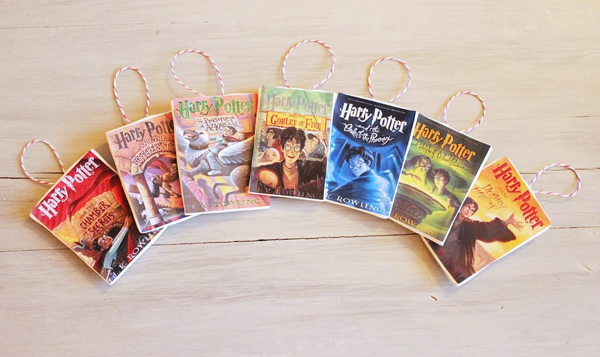

Harry Potter Books

All Harry Potter Books
J.K. Rowling’s seven-book Harry Potter series deserves every bit of its historic success, but I was the last person on earth to discover it. Having read the first three novels in my teens, I somehow put them aside and went on to other things. What an unexpected surprise it was to read all seven for the first time as an adult, and to be dying to discuss this scene or that moment with anyone who would listen. Naturally, I’ve recently been subjected to many versions of, “Wait! You mean this is the first time you’ve read them all?!”
But how to review a series with so many important secrets and twists, including some, the premature revelation of which could only be justly punished by burning at the stake? Indeed, I am greatly indebted to decades worth of discrete readers who never spoiled the books for me. On the other hand, so many know the story that a review might seem superfluous. There appears to be only one way to go about it, and that is to attempt to approach the series through some of its most defining themes. Without plot-spoilers, I offer the reader eight elements that set this series apart from other contemporary fantasy series: characters, gravity, the question of trust, excellent plotting, powerful moments, war and the question of death, the natures of good and evil, and the triumph of agape love. At the end I will briefly address a few of common criticisms.

Rowling invests each of her characters with a delightful individuality, a vitality in speech, appearance, and behavior that makes them leap off the page as three-dimensional beings. Though at first a bit caricature-like, they deepen as the stories deepen, becoming our old friends. There seemed something Dahlish or Dickensish about her characterization, yet at the same time it feels very original, very modern. How does she achieve this classic/contemporary feel? I really don’t know.
What’s interesting is that this lively characterization applies not only to the handful of main characters, but to second- and third-tier characters, and even to characters who appear only in flashback. Like a skilled chef, Rowling knows how to add just the right ingredients, and just enough seasoning to achieve very distinct flavors, and she lets these play off each other, enriching and defining the experience over time.
Both singly and as a series, the Harry Potter books are extremely well-plotted. A good plot is at once unguessable, and, in the end, inevitable. An excellent plot achieves this not primarily by ad hoc events that force the story along, but by the unexpected resolutions of the combined weight of its characters’ choices. When the characters are well drawn, and their choices believable, the effect is, well, magical. Yet a truly great degree of plotting is achieved when, having satisfied the previous criteria, the plot’s movement and resolution manifest and reveal themes that were always present and, indeed, woven into every layer of the story, and present in each of its parts.